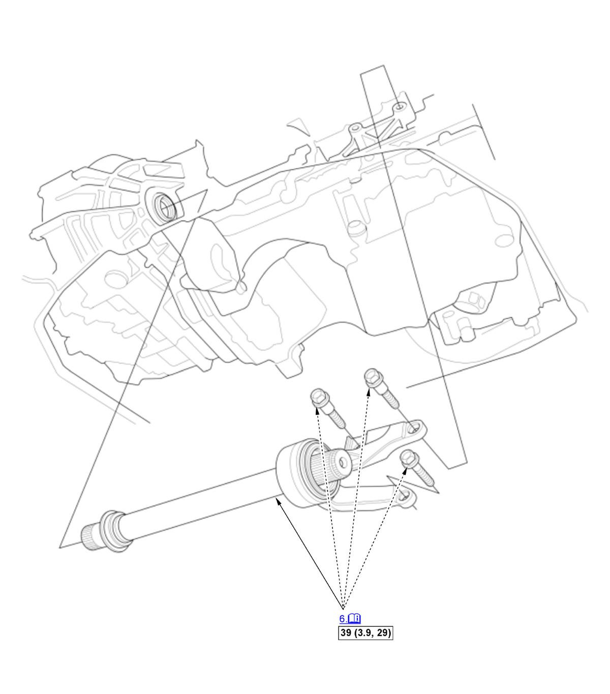

Removal and Installation: Procedure
NOTE:
Numbered call-outs in figure pertain to list numbers in following procedure.

Courtesy of HONDA, U.S.A., INC. |
Detailed information, notes, and precautions |
 |
Torque: N.m (kgf.m, lbf.ft) |
- Vehicle - Lift
- Engine Undercover - Remove
NOTE: Remove the necessary part(s).
- Transmission Fluid - Drain
- Right Front Wheel - Remove (Both Side)
- Right Driveshaft Inboard Joint - Disconnect
- Intermediate Shaft - Remove
NOTE: Hold the intermediate shaft horizontal until it is clear of the differential to prevent damaging the oil seal.
- All Removed Parts - Install
1. Install the parts in the reverse order of removal. - Wheel Alignment - Check
- Test Drive - Check